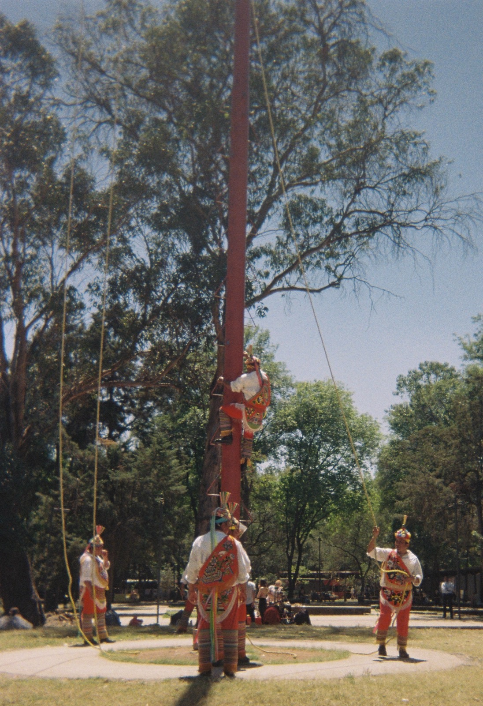
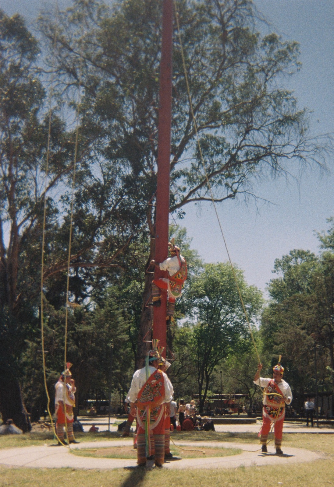

About
Hello, I'm Roberto. I build things for the web.
Selected Writings
- 2025 ¿Cómo Debe el Poder Judicial Abordar el Uso de Inteligencia Artificial?
- 2025 Algún Día Todos Habrán Estado Siempre en Contra de Esto
- 2024 Presentation @ Stanford CodeX
-
2024
Building Bridges: Redefining Access to Judicial information using AI Stanford Legal Design Lab AI + Access to Justice
Projects
Solomon (Sor Juana)
A brief description of the Solomon project.
Pale Fire (Sor Juana 2)
A brief description of the Pale Fire project.
Fading Light
A brief description of the Fading Light project.
Experience
Supreme Court of Justice of the Nation (Mexico)
July 2023 - September 2025Led AI initiatives, developing the court's first AI application and LLM strategy through the 'Sor Juana' project. Collaborated with Senior Secretary Irlanda Ávalos on landmark cases involving equality, AI, and climate change.
Integrated legal expertise with technology to revolutionize access to Supreme Court documents. Worked on comprehensive legal cases related to Human Rights and Constitutionality.
Gained foundational exposure to constitutional law and judicial processes. Assisted in research and documentation for various legal proceedings.
Education
Master's Degree in Corporate Law
Universidad de Monterrey (UDEM) September 2025 - August 2027 (expected)Bachelor's Degree in Law
Universidad Autónoma de Nuevo León (UANL) August 2019 - June 2024Bachelor's Degree in Computer Science
Instituto Tecnológico y de Estudios Superiores de Monterrey (ITESM) August 2022 - October 2023Fellowships & Awards
CAINTRA Grow Programme Fellow
Cámara de la Industria de Transformación de Nuevo León (CAINTRA) & Universidad de Monterrey September 2025 - August 2027 (expected)Selected for prestigious full-ride scholarship program supporting graduate studies. Engaged in collaborative AI research initiatives with the university, bridging academic innovation with real-world applications.
Research Fellow
Center for Studies on the Teaching and Learning of Law (CEEAD) - 'Semilla' Programme August 2021 - April 2022Conducted extensive research on the impact of Criminal Law policy efficacy in Mexico.
2024 "AI in Government" Prize
Federal Institute of Telecommunications, National Association of Artificial Intelligence, Asociación Latinoamericana de Internet & U-GOB August 2024Awarded for the 'Sor Juana' project, recognized as the best implemented AI project at the federal level.
2024 Prize for Best Data Protection Practices
National Institute for Transparency, Access to Information, and Protection of Personal Data (INAI) December 2024Awarded for the efforts in data protection demonstrated in the 'Sor Juana' AI project.
Film


 

Music
CV
Contact Me
Feel free to reach out to me. I'd love to hear from you!